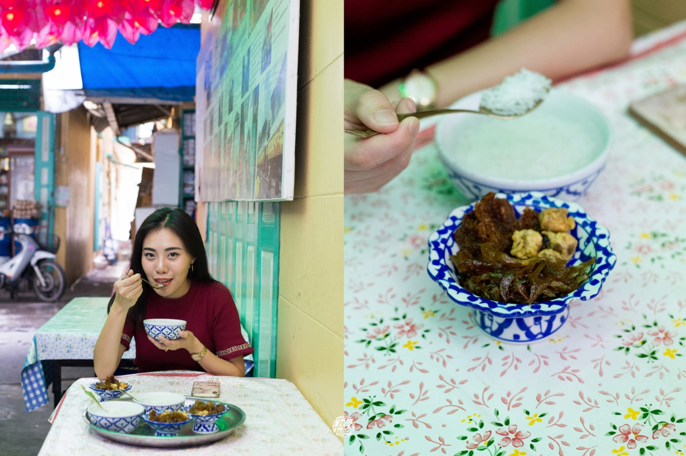
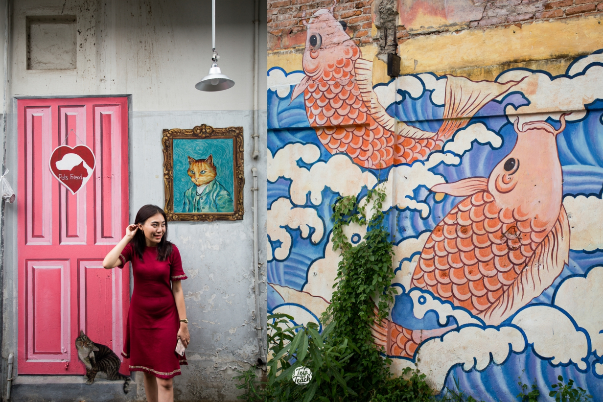
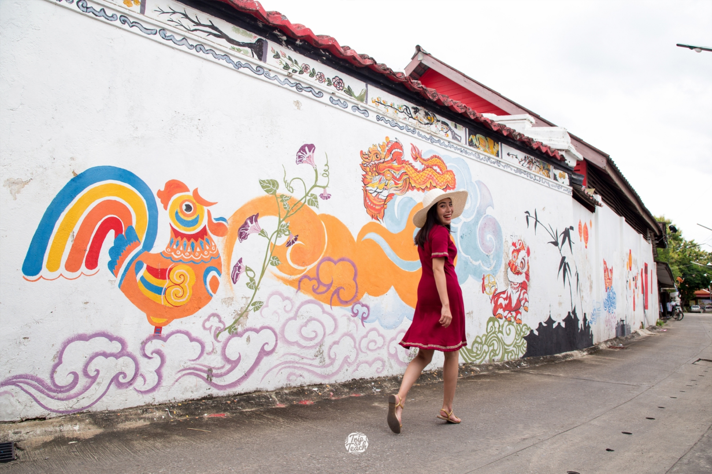

ช้อปขนมโบราณที่ตลาดริมน้ำเมืองเพชร
ขนมโบราณอร่อยๆที่หาทานกันได้ยากที่นี่มีหมดค่ะ ขนมตาลเอย ขนมครกโบราณเอย
แม่ค้าที่นี่ก็น่ารัก ยิ้มแย้มแจ่มใส ส่วนที่ไม่ควรพลาดก็จะเป็น ‘ข้าวแช่แม่อร’ ข้าวแช่ตำรับเมืองเพชรดั้งเดิม
ถือว่าเป็นร้านอร่อยประจำเมือง ควรค่าแก่กสนมาลองมากๆจ้าา
ที่นี่เปิดทุกวัน จันทร์ ถึง อาทิตย์ ตั้งแต่ 8โมงเช้าถึง4โมงเย็นค่ะ
แวะถ่ายรูปกับสตรีทอาร์ตกลางตลาด ชิคๆ
ใครจะรู้ว่าเมืองเพชรจะมีาพวาดสตรีทอาร์ตเยอะขนาดนี้ มีตั้งแต่ไซส์มินิ ไปถึงจัมโบ้เลยจ้าา
ดูน่ารักและลงตัว คนวาดก็จะมีความcreative ซ่อนตามซอกมุมต่างๆของกำแพงตึก
เหมือนกำลังล่าสมบัติ ต้องตามเก็บกันหลายจุด